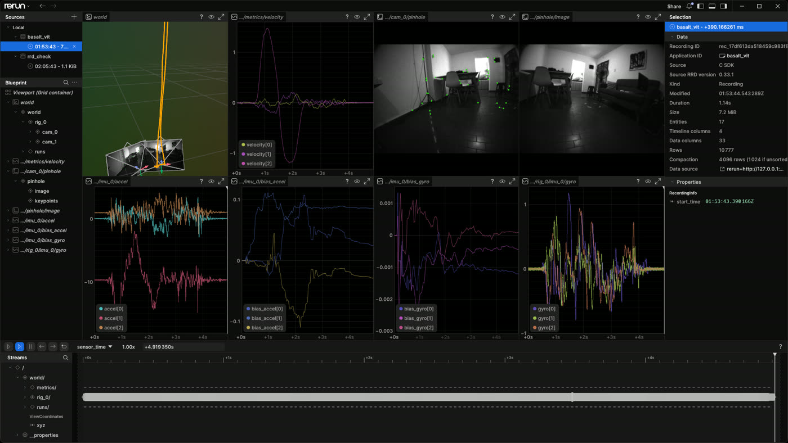

Inside-out 6DoF tracking for an HP Windows Mixed Reality headset on Linux:
Monado (OpenXR runtime, pure-pixi build) loads this repo's Basalt as a runtime SLAM plugin via the
VIT 2.0 interface (libbasalt.so, dlopened through
VIT_SYSTEM_LIBRARY_PATH — no build-time coupling), with live Rerun visualization of the
tracking pipeline and an OpenXR client rendering to the headset.
| Decision | Choice |
|---|---|
| Scope | Full stack: 6DoF tracking + OpenXR client rendering to the headset display |
| Monado build | Pure pixi, no fallback — conda-forge deps only, mirroring basalt's packaging |
| Monado repo | Clone of GitLab upstream at ~/0Dev/repos/monado, pixi branch, mirrored to github.com/pablovela5620/monado |
| Rerun scope | Live: extend src/vit/vit_tracker.cpp with env-gated rerun logging (reuse rerun_export.cpp) |
| Delegation | Bulk work (pixi packaging, rerun plumbing) → gpt-5.5 via codex CLI; architecture/debug/validation → Claude |
| Validation | Stationary-only this session (user unavailable for motion); movement + wear test deferred to runbook below |
HP WMR headset ──USB (cameras+IMU)──▶ Monado wmr driver ─▶ t_vit ──dlopen──▶ libbasalt.so (VIT 2.0)
│ │ │
└──DisplayPort◀── Monado compositor ◀── OpenXR client └── poses ──▶ 6DoF └──▶ Rerun viewer (live)
Plan-B validation path (headset-independent):
MSD dataset (MOO09) ─▶ Monado euroc driver ─▶ t_vit ─▶ libbasalt.so ─▶ poses + Rerun| # | Phase | Status | Notes |
|---|---|---|---|
| 1 | HTML tracker scaffold | DONE | This file |
| 2 | Headset USB enumeration | BLOCKED — hardware | See hardware findings; suspected power-delivery failure, needs physical check |
| 3 | Monado clone + pin + mirror | DONE | Pinned 4b339a28b (VIT 2.0, matches basalt); mirrored to github.com/pablovela5620/monado (private — flip public yourself if wanted; auto-mode denied agent-chosen public visibility) |
| 4 | Monado pixi packaging (codex) | DONE | Pure conda-forge build; WMR/EUROC/QWERTY/SLAM/Vulkan-compositor ON; one patch (gettid→syscall for conda sysroot); binaries smoke-tested; committed bb89401d6 on pixi, pushed to mirror |
| 5 | VIT tracker rerun logging (codex) | DONE | Committed 2a82024; env-gated BASALT_VIT_RERUN=spawn|<url>|<path>.rrd, _IMG_STRIDE, _IMU |
| 6 | udev rules | TODO | One sudo command, see runbook step 2 |
| 7 | Monado→Basalt VIT wiring | DONE | VIT_SYSTEM_LIBRARY_PATH=…/basalt/build/libbasalt.so + SLAM_CONFIG=<toml>; verified via slambatch and live service |
| 8 | OpenXR test client | DONE | hello_xr pixi-built at ~/0Dev/repos/openxr-sdk-source (one CMake patch to build hello_xr without full test suite) |
| 9 | Rerun validation (stationary) | DONE | See evidence below — full pipeline validated headlessly, incl. an OpenXR client session |
| 10 | Motion + display validation | DEFERRED | Runbook below; requires user at the machine |
| 11 | Docs + commits + mirrors | TODO | WMR.md is stale (references removed data/monado/) |
04b4:6504, "HP Inc. HP Windows Mixed Reality", bus 2-7) — powered from USB bus voltage.045e:0659 Microsoft HoloLens Sensors device (the cameras + IMU Monado needs).not attached; hub is runtime-suspended.card1-DP-1/2/3, HDMI-A-1) report disconnected — no DP hotplug from the headset.lsusb -d 045e:0659 — the HoloLens Sensors device must appear.thirdparty/vit/vit_interface.h); target basalt builds libbasalt.so including src/vit/vit_tracker.cpp.4b339a28b — its src/external/vit_includes/vit/vit_interface.h is also 2.0.drv_euroc) replays EuRoC-layout datasets through the full runtime — the headset-independent validation path.data/vit/: msdmo.toml matches Monado SLAM Dataset / Odyssey+ (MOO sequences).doc/monado/WMR.md is stale: references $bsltdeps and data/monado/, superseded by the VIT-era layout.VIT_SYSTEM_LIBRARY_PATH=…/basalt/build/libbasalt.so \
BASALT_VIT_RERUN=moo09_vit.rrd BASALT_VIT_RERUN_IMU=1 BASALT_VIT_RERUN_IMG_STRIDE=4 \
monado-cli slambatch datasets/MOO09_short_1_updown <config.toml> <outdir>tracking.csv: 147 poses; z-range 0 → 0.742 m with x/y within cm — correct for an "updown" sequence.rerun rrd verify; contents: poses/trajectory (147), stereo images + keypoints (37 each — stride 4), gyro/accel (4944 each), velocity + biases (147), timelines frame 0..146 / sensor_time 0..4.92 s.slambatch quits on stdin EOF (getchar() exit thread) — keep stdin open, don't < /dev/null.Native headless viewer screenshot (Rerun 0.33.1, ViewerClient.spawn(headless=True)):
3D trajectory rising vertically with stereo frusta, green feature overlays on the WMR fisheye frames,
velocity/IMU/bias plots. Full report: /tmp/rerun-viewer-validation/20260705-moo09/.

# service (null compositor, euroc device as SLAM-tracked HMD)
XRT_COMPOSITOR_NULL=1 EUROC_HMD=true EUROC_PATH=<dataset> \
VIT_SYSTEM_LIBRARY_PATH=…/libbasalt.so SLAM_CONFIG=<toml> SLAM_SUBMIT_FROM_START=true \
monado-service
# client
XR_RUNTIME_JSON=…/monado/build/openxr_monado-dev.json hello_xr -g VulkanIPC_IGNORE_VERSION=1 (git-describe check).Together these validate every layer except the WMR USB device itself (hardware power blocker) and the physical display path (NVIDIA direct mode).
lsusb -d 045e:0659.sudo cp <rules> /etc/udev/rules.d/70-wmr-headset.rules # content below
sudo udevadm control --reload && sudo udevadm triggerSUBSYSTEM=="usb", ATTRS{idVendor}=="045e", ATTRS{idProduct}=="0659", TAG+="uaccess"
KERNEL=="hidraw*", ATTRS{idVendor}=="045e", ATTRS{idProduct}=="0659", TAG+="uaccess"
SUBSYSTEM=="usb", ATTRS{idVendor}=="03f0", TAG+="uaccess"
KERNEL=="hidraw*", ATTRS{idVendor}=="03f0", TAG+="uaccess"cd ~/0Dev/repos/monado
VIT_SYSTEM_LIBRARY_PATH=$HOME/0Dev/repos/basalt/build/libbasalt.so \
BASALT_VIT_RERUN=spawn XRT_DEBUG_GUI=on \
pixi run ./build/src/xrt/targets/service/monado-serviceSLAM_CONFIG, Monado extracts calibration from the WMR device's factory JSON.)XR_RUNTIME_JSON=$HOME/0Dev/repos/monado/build/openxr_monado-dev.json … hello_xr -g Vulkan); put the headset on — the scene must be stable in space as your head moves. NVIDIA direct-mode/DRM-lease to the headset DP output is the known risk on this box (RTX 3060, driver 595).